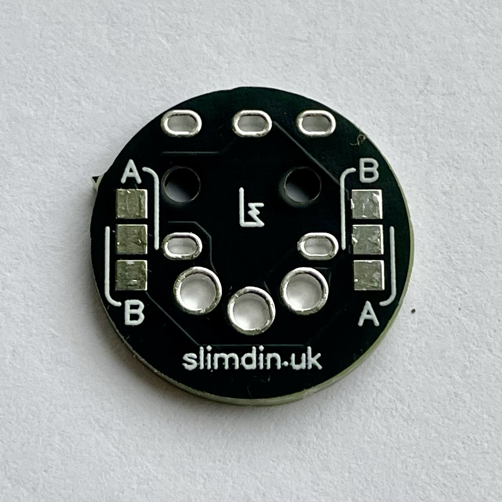
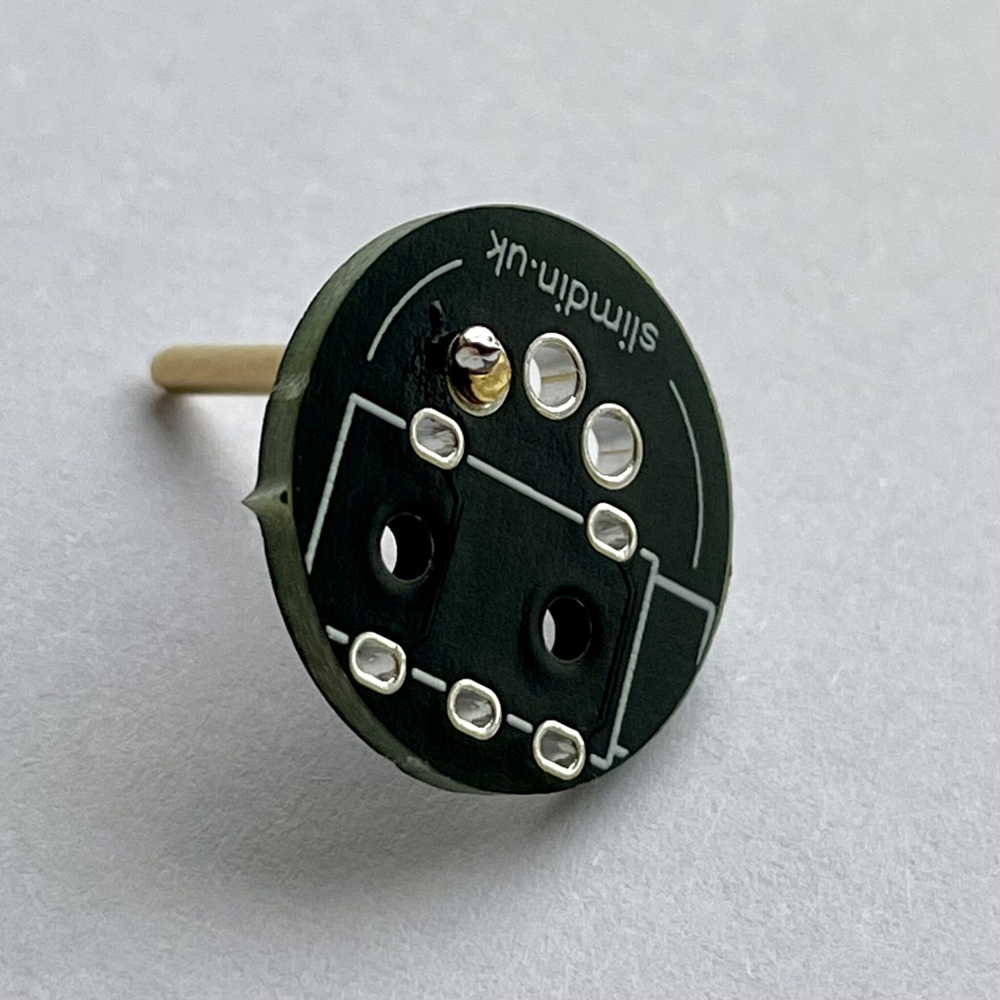
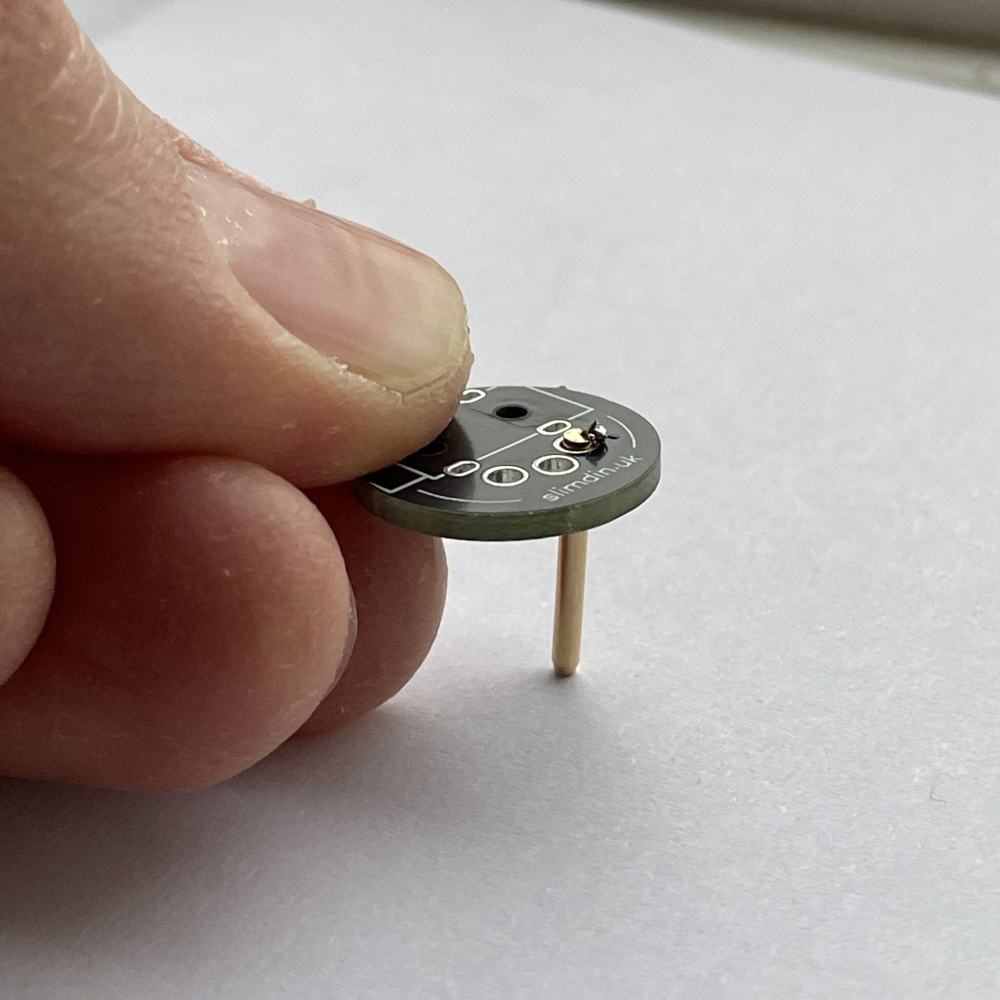
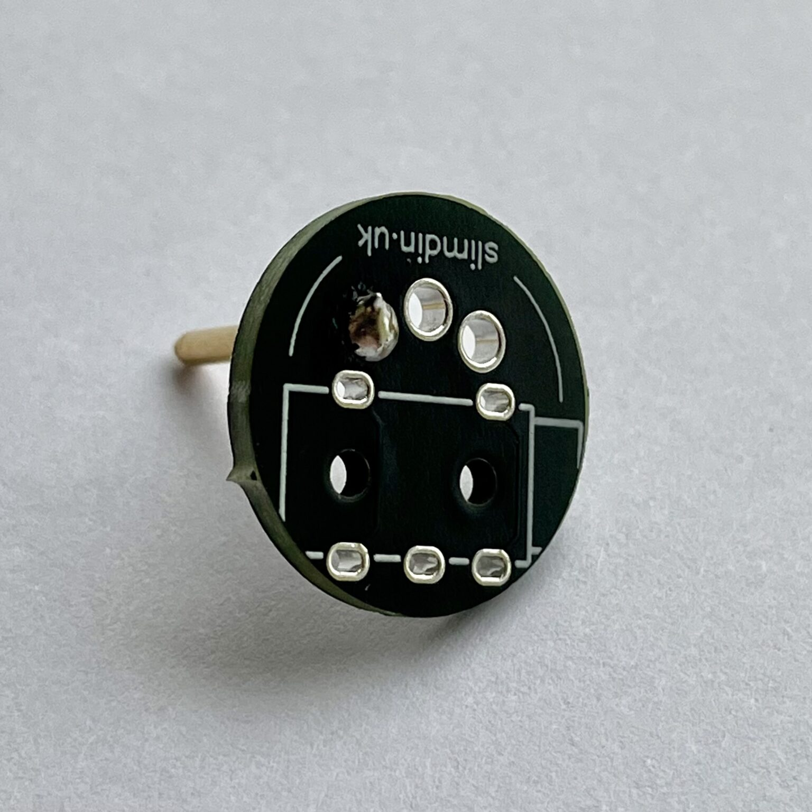
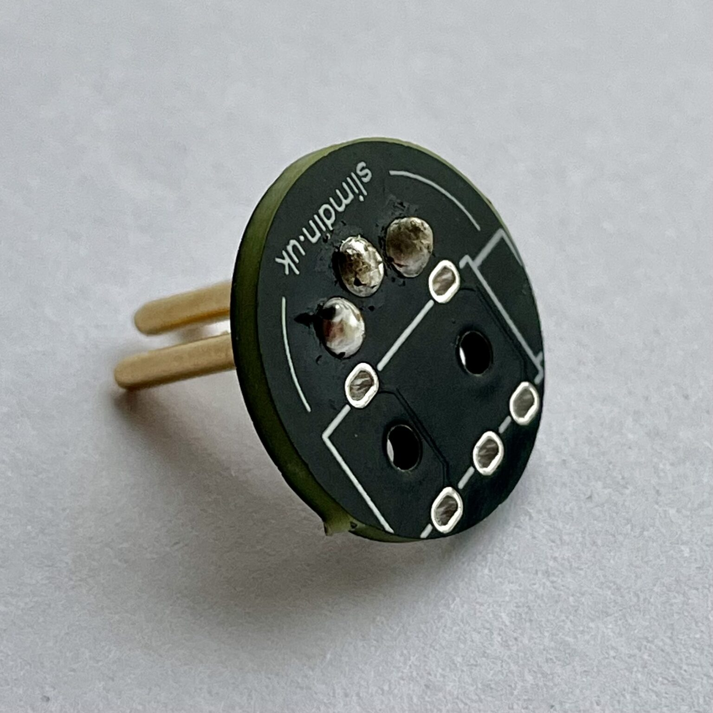
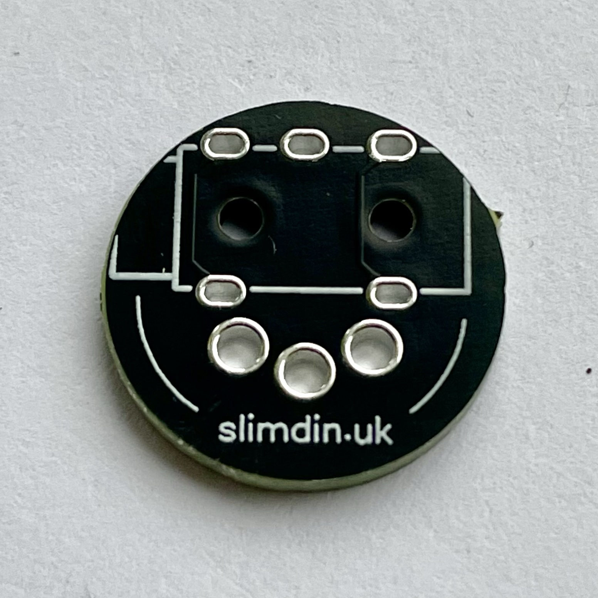
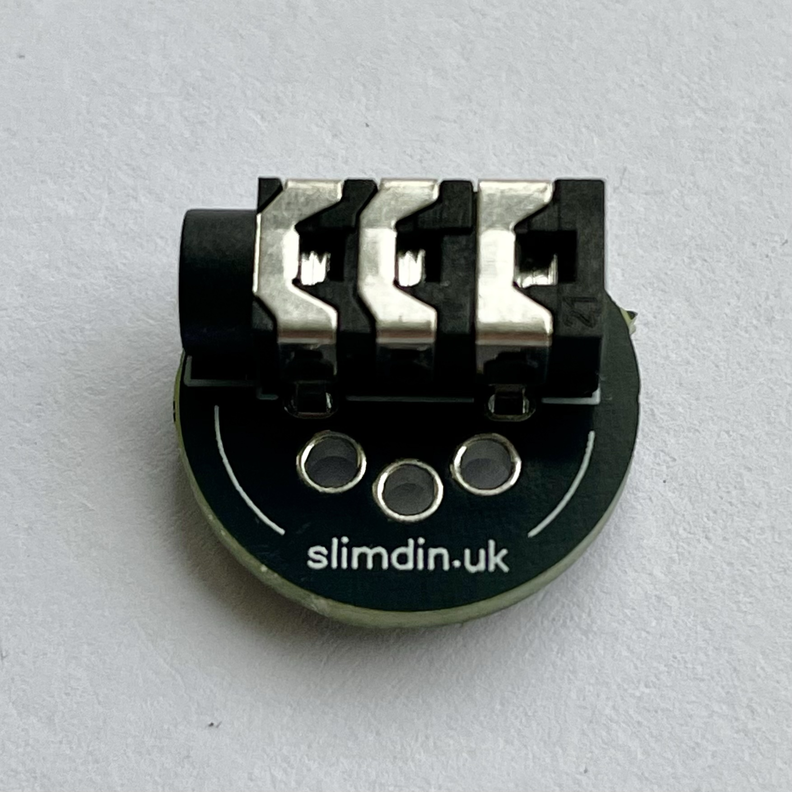
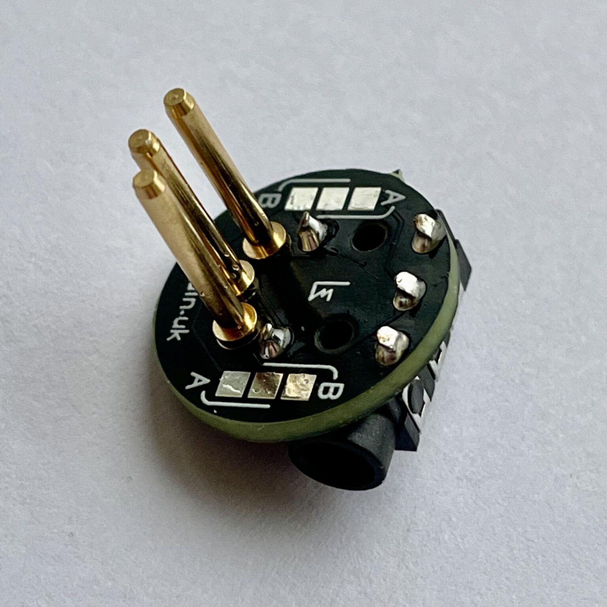

SlimDin Assembly Instructions
Things You’ll Need:
- SlimDin kit
- Soldering iron with a 2-3mm tip
- Solder
- Multimeter (optional, for testing connections)
Step 1: Solder the DIN Pins
Locate the side of the PCB with the A/B Type selection pads. This is the side where the DIN pins will be installed.

Insert the first DIN pin and tack it in place on the opposite side of the PCB with a small amount of solder initially.

And now for the tricky bit!
Hold the assembly on a heatproof surface applying gentle pressure under the pin to seat it fully.

Use the soldering iron to apply more solder and heat to the joint while maintaining pressure. You may need to pre-apply solder to your iron in order to achieve this.

Another option might be to use a solder helper / helping hands to hold the PCB and pin securely in position. Repeat this process until the pin is seated nicely. Repeat for the remaining two DIN pins, soldering them one at a time.

Step 2: Solder the TRS Jack Socket
Flip the PCB to the side where the outline of the TRS port is visible. Align the TRS jack socket with its corresponding footprint on the PCB. Ensure the pins fit snugly into the holes.

Solder each pin of the TRS socket to the PCB, making sure the joints are clean and secure.

Step 3: Configure MIDI Type
Flip the PCB to the side where the A/B Type selection pads are located. Determine the MIDI standard your setup uses:
- Type A: Used by most MIDI devices.
- Type B: Used by certain devices (check your gear specifications).
Bridge the corresponding pads (Type A or Type B) using a small blob of solder. Ensure the connection is clean and doesn’t short other pads.

Step 4: Inspect and Test
Check for solder bridges (unintended connections between pads). Inspect all joints to ensure they are shiny and properly formed.

If you have a multimeter, test for continuity to verify each TRS pin connects to only one DIN pin. Connect your assembled SlimDin to a MIDI device to confirm the MIDI signal is transmitted correctly.
Continuity testing in Type A configuration

Enjoy your custom-built SlimDin!